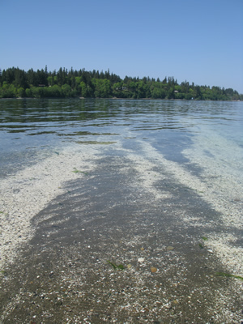

Puget Sound Oceanography: |
Winter Term 2011 |
|  |
Instructors: Meeting times: MWF 11:30-12:20 Many students have research projects in Puget Sound or other estuaries. Our goal is to give you a broad overview of all the interacting processes that shape estuarine ecosystems, particularly Puget Sound. Our second goal is to help you understand the global variation of estuaries, so that you can compare processes across different systems. Think of it as a class to help you write the Introduction and Conclusion sections of your thesis! |
Click here for the SYLLABUS |
Course Description: This class is intended for graduate and advanced undergraduate students from any scientific discipline. We will study the physical-biological coupling in a wide range of estuarine systems from around the world, with Puget Sound as a primary example. We focus on important estuarine processes and their consequences:
The course will consist of lectures, focused discussions of research papers, and discussions with local experts. Students will write a number of short response essays based on the reading, and a longer paper on a topic of their choice. Students will give a short presentation on their final paper in the last week. There will be no final exam.GRADING:
|
References (all links removed)Chesapeake Bay
Long Island Sound
Hypoxia and the Gulf of Mexico Dead Zone
San Francisco Bay
Puget Sound
Willapa Bay, WA
Estuarine Physics Overviews
Estuarine Biology Overviews
ORGANIZATIONS:
DATA:
PUBLICATIONS:
OTHER LINKS:
|